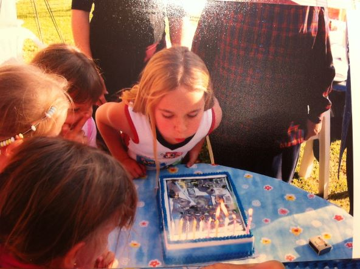

Sci Fi

I have always been a Sci Fi fanatic, from age 5 when I would sneak into the living room when I was supposed to be in bed, sleeping. My father and grandfather would watch Star Wars together and I was unable to bear being barred from something that even my 5 year old brain knew with absolute conviction- to be AWESOME! I was not allowed to watch Star Wars at that age due to the violence, and nightmare potential that aliens possess, but that didn't stop me. Fast forward five years, and I was blowing out the candles on my Star Wars icecream cake.

My idol was Princess Leia, the first strong female lead that did not do as she was told and who's worth was not determined by her ability to be rescued by a prince. Unfortunately not every young girl was as Star Wars crazed as I, and attending a Princess dress up party as Princess Leia did not win the approval of those dressed as Disney princesses.
That however, did not deter me, and fast forward another 5-10 years and I had a strict rule in place, I would not date anyone that had not seen, and appreciated Star Wars. I managed to marry someone equally as obsessed with Star Wars, somehow his depth of knowledge exceeds mine as does his collection of Star Wars books. We recently enjoyed watching The Mandalorian and Boba Fett- series set in the Star Wars universe, and thereafter I received a Grogu plushie for Valentiesday. He clearly knows the way to my heart.
My adoration of sci fi extends beyond Star Wars to include a variety of games and films, however Star Wars was the starting point and has remained important to me.

Reading
I absolutely love reading, my favorite books usually create an overlapping venn diagram of romance and fantasy.My reading goal for 2022 is to read 22 books, last year my goal was to read 20 books which I achieved.
Here are a few of my favorite books:
| Title: | Author: |
|---|---|
| Mistborn | Brandon Sanderson |
| The Stormlight Archive | Brandon Sanderson |
| Shadow and Bone | Leigh Bardugo |
| The Priory of the Orange Tree | Samantha Shannon |
| A Court of Thorns and Roses | Sarah J Maas |
Check out my Goodreads for more reading recommendations: